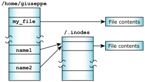
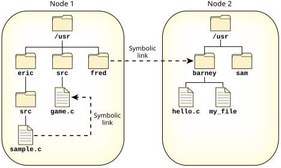

File data is stored distinctly from its name and can be referenced by more than one name. Each filename, called a link, points to the actual data of the file itself.
(There are actually two kinds of links:
hard links, which we refer to simply as links,
and symbolic links, which are described in the next section.)
In order to support links for each file, the filename is
separated from the other information that describes a file.
The non-filename information is kept in a storage table
called an inode (for information node
).
If a file has only one link (i.e., one filename), the inode information (i.e., the non-filename information) is stored in the directory entry for the file. If the file has more than one link, the inode is stored as a record in a special file named /.inodes—the file's directory entry points to the inode record.

Note that you can create a link to a file only if the file and the link are in the same filesystem.
There are some situations in which a file can have an entry in the /.inodes file:
When a file is created, it's given a link count of one. As you add and remove links to and from the file, this link count is incremented and decremented.
The disk space occupied by the file data isn't freed and marked as unused in the bitmap until its link count goes to zero and all programs using the file have closed it. This allows an open file to remain in use, even though it has been completely unlinked. This behavior is part of that stipulated by POSIX and common Unix practice.
Although you can't create hard links to directories, each directory has two hard-coded links already built in:
dot)
dot dot)
The filename dot
refers to the current
directory; dot dot
refers to the previous (or parent)
directory in the hierarchy.
Note that if there's no predecessor, dot dot
also refers to the current directory.
For example, the dot dot
entry of / is simply
/; you can't go further up the path.
A symbolic link (or symlink) is a special file that usually has
a pathname as its data. When the symbolic link is named in
an I/O request—by open(), for
example—the link portion of the pathname is replaced
by the link's data
and the path is reevaluated.
Symbolic links are a flexible means of pathname indirection and are often used to provide multiple paths to a single file. Unlike hard links, symbolic links can cross filesystems and can also link to directories. You can use the ln utility to create a symlink.
ln -s /net/node2/usr/barney /net/node1/usr/fred
ln -s /net/node1/usr/src/game.c /net/node1/usr/eric/src/sample.c

Several functions operate directly on the symbolic link. For these functions, the replacement of the symbolic element of the pathname with its target is not performed. These functions include unlink() (which removes the symbolic link), lstat(), and readlink().
Since symbolic links can point to directories, incorrect configurations can result in problems, such as circular directory links. To recover from circular references, the system imposes a limit on the number of hops; this limit is defined as SYMLOOP_MAX in the <limits.h> include file.
Symlinks to symlinks
# ln -sP /dev/shmem /some_dir # echo > /some_dir/my_file # ln -sP /some_dir/my_file /some_dir/my_link # ls /some_dir my_file my_link # cd /some_dir # ls my_file
Note that ls shows the link if given an explicit path, but otherwise doesn't. Understandably this can cause some confusion and distress. Since it's common for /tmp to be a link to /dev/shmem, this situation can easily arise for special files created in /tmp.
The root of the problem is that when you use chdir() or the shell's cd command to go to some_dir, you actually end up at /dev/shmem, because of the some_dir symbolic link. But you asked the process manager to create a link under /some_dir, not under /dev/shmem, and the process manager doesn't care that /some_dir is a link somewhere else.
The problem can occur any time a directory symlink exists, where the following special files are created by postfixing the symlink path:
We recommend that you always create such links/attachment points by using a canonical path prefix that doesn't contain symlinks. If you do this, then the name will be accessible through the canonical path as well as through the symlink.